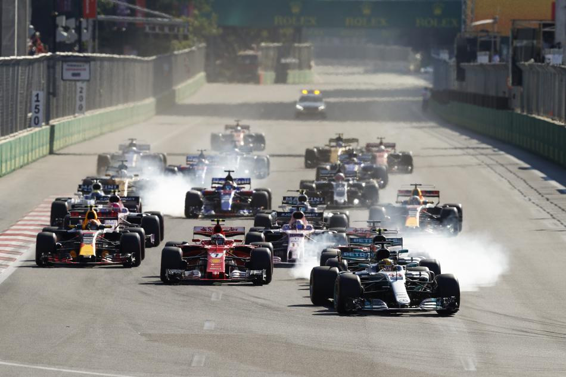

GRAND PRIX OF AZERBAIJAN
Cicuit Length:
6.003km (3.730 mi)
Turns:
20
Number of Laps:
51
First Grand Prix:
2016
Race Distance:
306.049 km
Azerbaijan's race is a country in West-Asia. Baku is the capital of Azerbaijan,
about 2,2 Million people live in Baku. And across Azerbaijan live about 9,9 Million inhabitants. So far the record holder
of this circuit is Max Verstappen. This year (2021) the race will be on June 6. The fastest speed last year (2019) was measured at 290 km/h.
The Azerbaijan Grand Prix is often the fifth event of the Formula 1 of the Calendar year.

Winners of the Azerbaijan GP
2020 - Canceled due to Corona
2019 - Valteri Bottas
2018 - Lewis Hamilton
2017 - Daniel Ricciardo
2016 - Nico Rosberg
2015 - Wasn't played
2014 - Wasn't played
2013 - Wasn't played
2012 - Fernando Alonso
2011 - Sebastian Vettel
2010 - Sebastian Vettel
2009 - Rubens Barrichello
2008 - Felipe Massa
2007 - Fernando Alonso